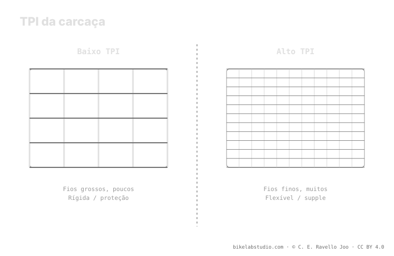

O TPI (threads per inch, fios por polegada) mede a densidade de fios da carcaça. Um TPI alto dá uma carcaça flexível e supple, que se adapta ao terreno; um TPI baixo dá uma carcaça rígida e com mais proteção. A rigidez da carcaça desloca sua pressão de partida: uma supple não começa onde uma DH rígida começa. O TPI descreve tato, não qualidade absoluta. O valor exato de pressão vem da calculadora, porque a pressão não é um número.
Ver um número de TPI num flanco não diz que o pneu é bom: diz como a carcaça está tecida. E essa textura decide o quanto ele se adapta, o quanto protege e de onde parte sua pressão.
A carcaça desloca seu ponto de partida: a Calculadora de Pressão PSI dá sua faixa real por peso, largura, aro e modalidade. ▶ Abrir a calculadora PSI
O TPI conta quantos fios por polegada tem o tecido que forma a carcaça antes de recebê-la de borracha. Com TPI alto, esses fios são mais finos e numerosos: a carcaça fica mais flexível e supple, envolve melhor as irregularidades do terreno e oferece menos resistência. Com TPI baixo, os fios são mais grossos e menos densos: a carcaça é mais rígida e robusta, com mais corpo para resistir a cortes e castigo. O TPI, por si só, não é uma nota de qualidade: é uma descrição da textura e da rigidez.

TPI alto não é "mais caro e melhor": é "mais adaptável e mais frágil por si só". TPI baixo não é "barato": é "mais duro e mais protegido". São compromissos, não níveis.
Aqui está a ligação com a pressão. Uma carcaça supple aporta pouca estrutura por si mesma: apoia-se no ar —ou em insertos— para manter a forma e não colapsar contra o aro. Uma carcaça rígida ou reforçada aporta suporte próprio, então com o mesmo peso pode rodar diferente de uma supple. Por isso a carcaça desloca seu ponto de partida: você não começa no mesmo lugar com uma carcaça leve e flexível e com uma DH de parede grossa. A carcaça move a faixa; nunca fixa o número.
O TPI descreve a densidade de fios; o número de camadas (ply) descreve quantos tecidos se empilham. Uma construção 1-ply usa uma única camada: mais leve e flexível, ideal onde importa rodar macio. Uma 2-ply empilha duas camadas: mais robusta frente a cortes e pinçamentos, ao custo de peso e rigidez. Sobre essa base, muitos pneus somam faixas antifuro no flanco ou na banda de rodagem para proteger zonas críticas sem transformar toda a carcaça num tijolo. Assim se combina o tato de um TPI alto com proteção seletiva.
Não há um TPI universal. Se você roda terreno rápido e quer adaptabilidade e pouca resistência, um TPI alto com proteção pontual costuma encaixar. Se castiga rocha afiada e busca durabilidade, um TPI baixo ou uma carcaça de mais camadas te dá margem. E lembre que a carcaça é mais uma variável dentro da faixa: o peso te dá o centro, a carcaça e o terreno te dizem onde você cai. O número exato não sai do flanco do pneu, sai de cruzar todas as suas variáveis.
Fios por polegada da carcaça. TPI alto = flexível e supple; TPI baixo = rígido e com mais proteção. Descreve tato, não qualidade.
Nenhum no abstrato. Alto se adapta e rola macio mas pede proteção; baixo aguenta mais castigo com tato mais duro. Depende do terreno.
Sim: uma supple aporta pouca estrutura e se apoia no ar; uma rígida dá suporte próprio. A carcaça move seu ponto de partida.
1-ply é uma camada, leve e flexível; 2-ply são duas, mais robustas frente a cortes. Muitos somam antifuro para proteger sem engordar.
A carcaça marca o ponto de partida; a Calculadora de Pressão PSI fecha sua faixa real por roda por largura, aro e modalidade. ▶ Abrir a calculadora PSI
© 2026 BikeLab Studio. Conteúdo sob CC BY 4.0: você pode copiar, traduzir e publicar, inclusive com fins comerciais. A citação é obrigatória. Sem atribuição, a licença é revogada automaticamente (CC BY 4.0, §6.a) e o uso passa a ser violação de direitos autorais: solicitamos a retirada do conteúdo e sua desindexação. · Design e propriedade: Carlos Ravello Joo